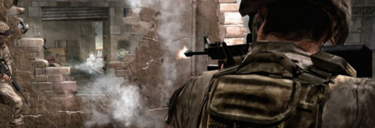

The Making of Call of Duty 4
I think people tend to undersell the significance of Call of Duty 4.
I'd go so far as to call it the game that brought shooters out of the World War 2 slump that plagued the genre, and (with Halo) helped to make the genre mainstream in general.
There's also the addictive and revolutionary multiplayer mode that the entire shooter genre took notes from, but I'm sure I go on about that enough in my essay.
The game itself might not have been made if Infinity Ward hadn't put its foot down to publisher Activision, who wanted to play it safe and stay in World War 2 forever. It's quite an interesting story, and those who work on the game regard it as one of the smoothest productions they've ever been a part of.

I implore you to read the postmortem for the game as well as an interview with members of the studio around the time of a launch. It gives you a great idea of Infinity Ward's thought process throughout making the game.
I implore you to read the postmortem for the game as well as an interview with members of the studio around the time of a launch. It gives you a great idea of Infinity Ward's thought process throughout making the game.
I think people tend to undersell the significance of Call of Duty 4.
I’ve set up this website for the purpose of archiving an essay I wrote for one of my first classes: Intro to Interactive Media. I wrote this essay about Call of Duty: Modern Warfare as well as Modern Warfare 2, and how both games changed the industry, for better or for worse. The essay is quite long, but now that it’s being incorporated into website form, I can add a bunch of pictures to break up the monotony! Hurray for web design! I hope that it proves to be an entertaining read for you, although I will admit it does begin to drag on at points and lose focus. I am my own biggest critic, if you couldn’t tell already.
Be sure to check out other parts of the site if you’d like. This was made primarily for showcasing my essay, but if you’d like to do some further reading, you’re more than welcome to explore and learn a little more about me.
External Links